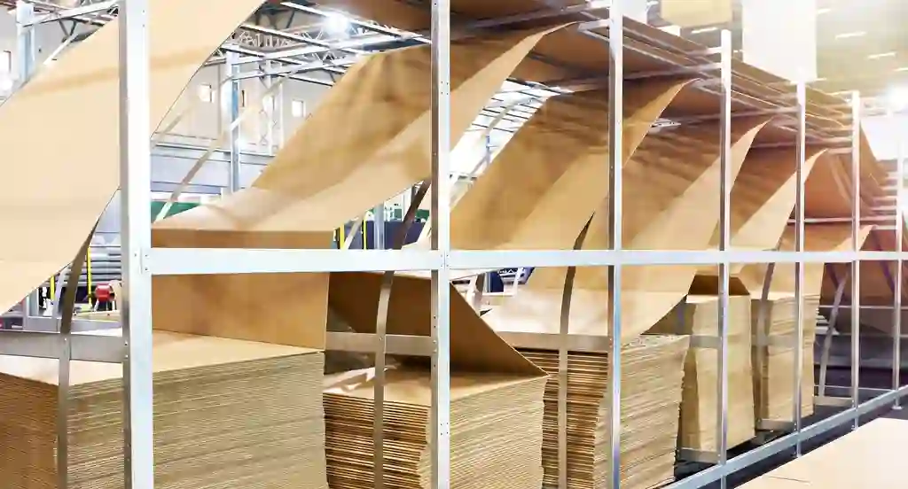
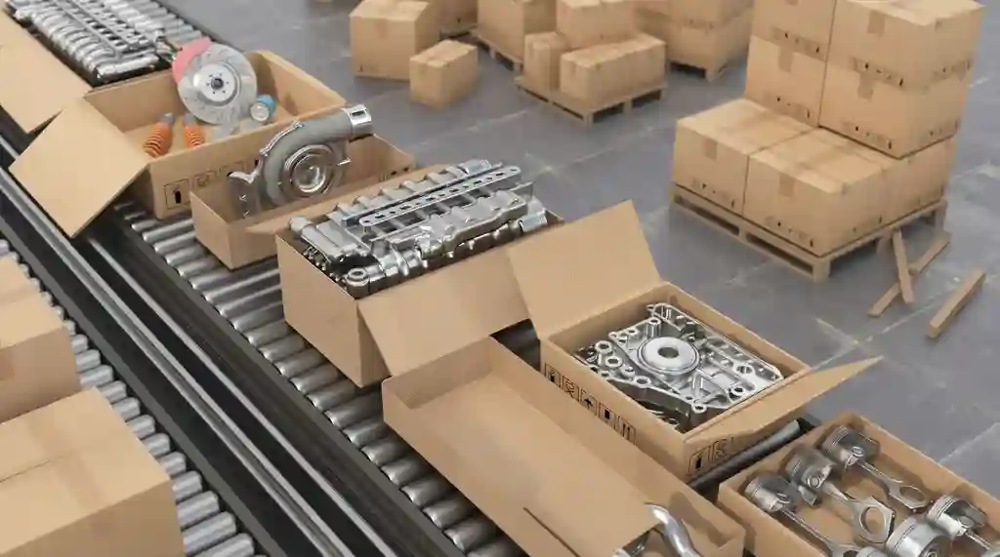
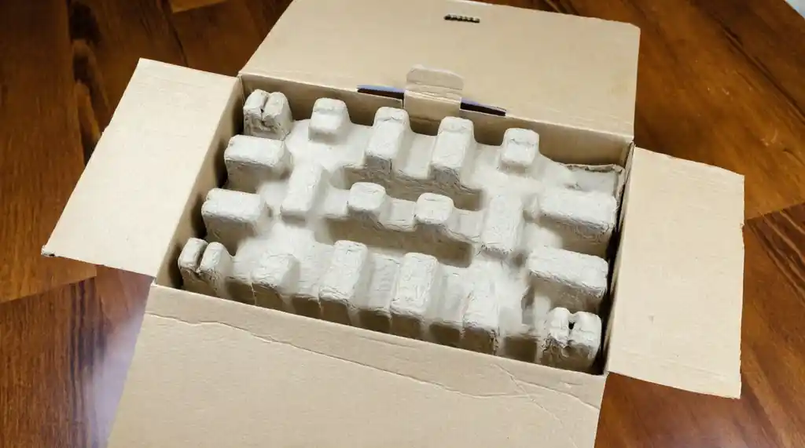

The Gap Between Sample and Mass Production in China Packaging
Many international buyers experience the same sequence:
A sample arrives. It looks right. Dimensions match. Materials feel solid. The structure holds. The factory confirms everything is approved.
Then mass production begins.
Weeks later, the first container arrives. Some crates are weaker. Internal blocking is incomplete. Board thickness varies. Markings are inconsistent. Or the protective inserts no longer fit the way they did in the sample.
The sample was accepted. The bulk order is not the same.
This gap between sample and mass production is one of the most common — and most costly — issues in China packaging sourcing.
Why the Gap Happens
It is rarely intentional fraud. More often, it is the result of how packaging projects actually move through a factory.
1. Sample production is treated differently
Samples are often made under closer supervision, sometimes by more experienced workers, using carefully selected materials. Mass production runs under normal line conditions, with different operators, different material batches, and tighter time pressure.
2. Specifications are not fully locked
Verbal confirmations or incomplete drawings leave room for interpretation. When the factory has to make a decision during production, they choose the option that is faster or lower cost — not necessarily the one that matches the sample.

3. Material substitution occurs quietly
A slightly different board grade, a thinner foam, or a change in fastening method can pass visual inspection while reducing performance. Without clear written specifications and incoming material checks, these changes are easy to miss.
4. No structured handoff from sample to production
In many factories, the team that makes the sample is not the same team that runs mass production. Critical details get lost in the transition.
5. Remote buyers discover problems too late
When communication happens only by email and photo, issues surface after the goods are packed or already on the water. Correction then becomes expensive or impossible.
What This Costs Buyers
The direct cost is rarely just the packaging itself. The real impact shows up as:
- Damaged or shifted product on arrival
- Delayed installation or project schedules
- Rework or replacement shipments
- Extra inspection and sorting at destination
- Loss of confidence in the supplier relationship
For industrial equipment, precision components, or time-sensitive projects, a packaging failure can disrupt far more than the packaging budget.

How to Reduce the Gap
Complete elimination is difficult. Significant reduction is possible with a more disciplined process.
1. Treat the sample as a technical reference, not just a visual approval
Document the sample thoroughly: materials, board grades, construction method, internal protection, fastening, marking, and weight. Photos and measurements should be part of the formal approval record.
2. Convert the sample into a clear production specification
Do not rely on “same as sample.” Translate the approved sample into written requirements the factory can follow during mass production. Include tolerances where relevant.
3. Confirm material sources and grades in writing
Ask the factory to confirm the exact materials that will be used in bulk. Where possible, request material certificates or batch information for critical components.
4. Require a pre-production or pilot run check
For important orders, ask for confirmation that the first mass-production units match the approved sample before the full run continues. This is far cheaper than discovering differences after everything is packed.
5. Build in pre-shipment verification
Structural checks, internal blocking review, marking consistency, and packing confirmation should happen before goods leave the factory — not after they arrive at the destination port.

The Role of Local Coordination
Remote management makes the sample-to-production gap harder to close. Details get lost in translation. Photos do not always show structural weaknesses. Problems that could have been corrected at the factory become destination problems.
Local coordination changes the sequence. Someone on the ground can:
- Compare mass-production units against the approved sample
- Confirm materials and construction before full output
- Raise issues while the factory can still correct them
- Support pre-shipment checks with clear reporting
The goal is not to replace the buyer’s decision-making. It is to keep specifications aligned and surface differences early — while correction is still practical.
Practical Takeaway
An approved sample is necessary, but it is not sufficient.
The real risk sits in the transition from sample to mass production. Buyers who treat that transition as a managed process — with clear documentation, material confirmation, and verification before shipment — reduce the chance of expensive surprises.
If you are currently managing packaging production in China and want a second set of eyes on the sample-to-bulk transition, we can help review the specification and production approach.